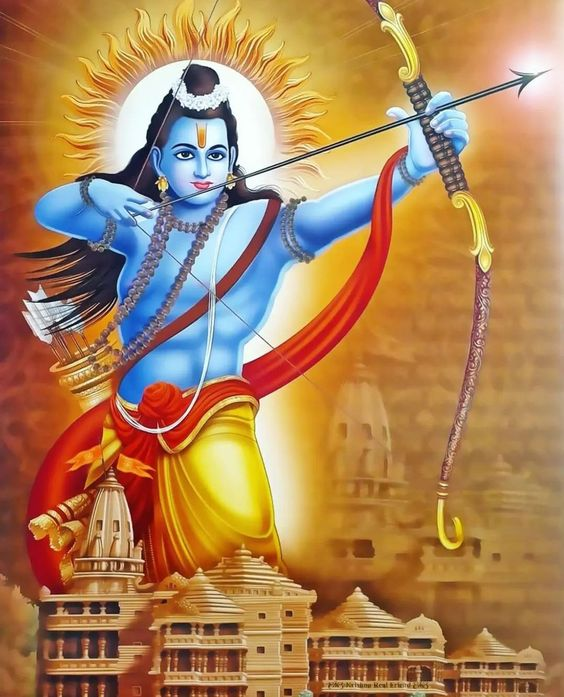
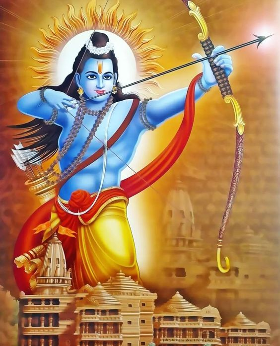
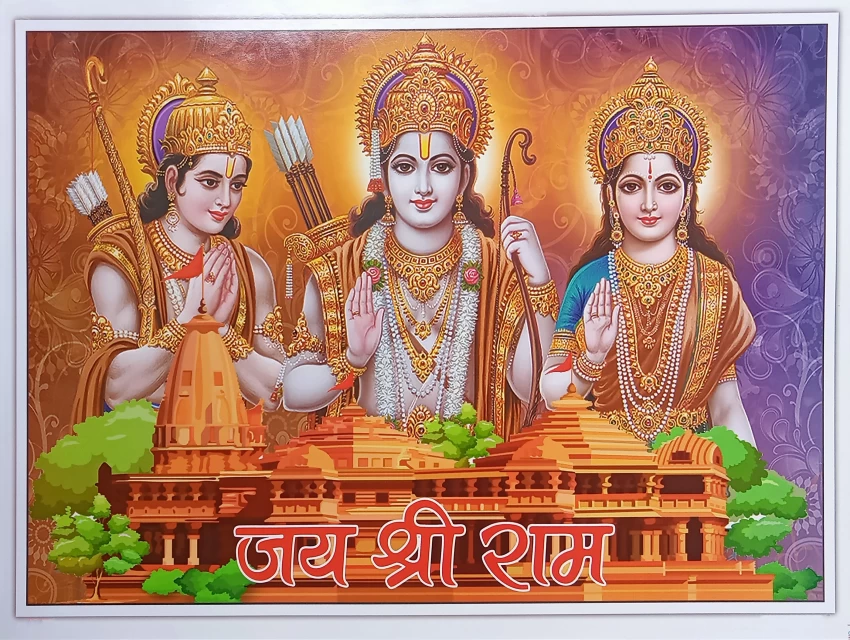
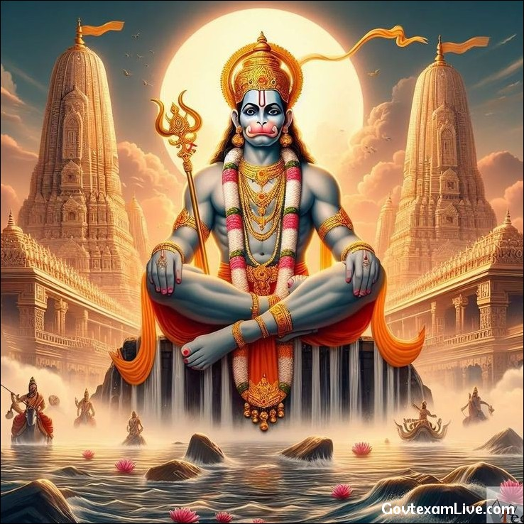
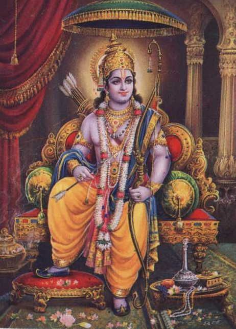
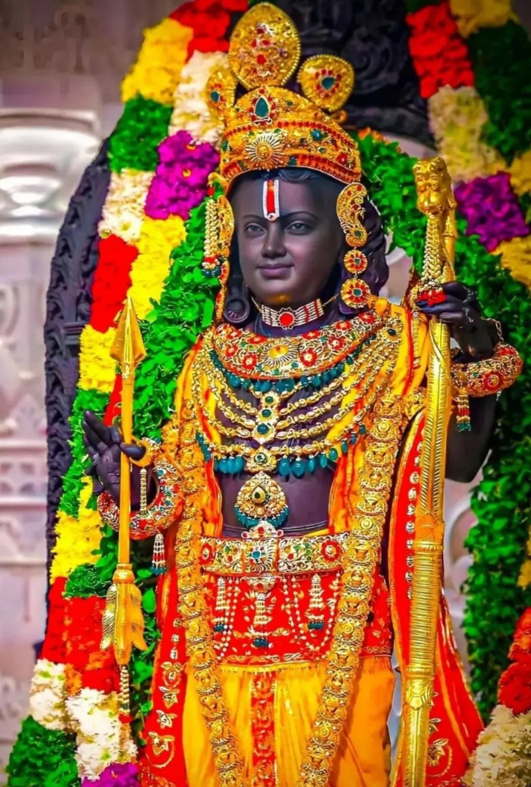
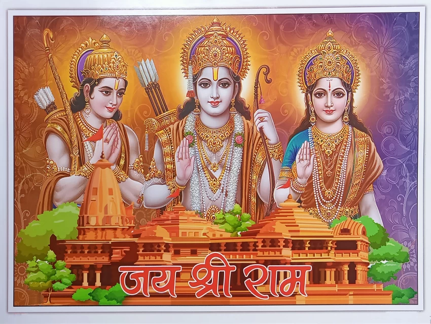
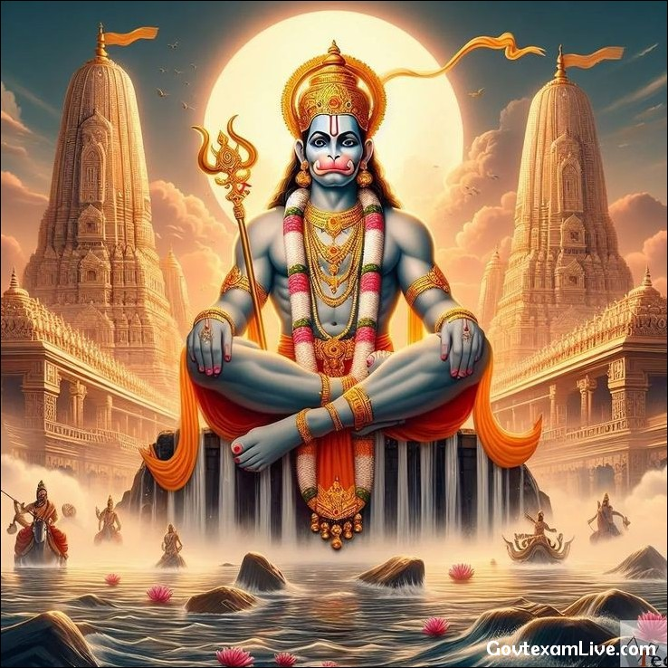
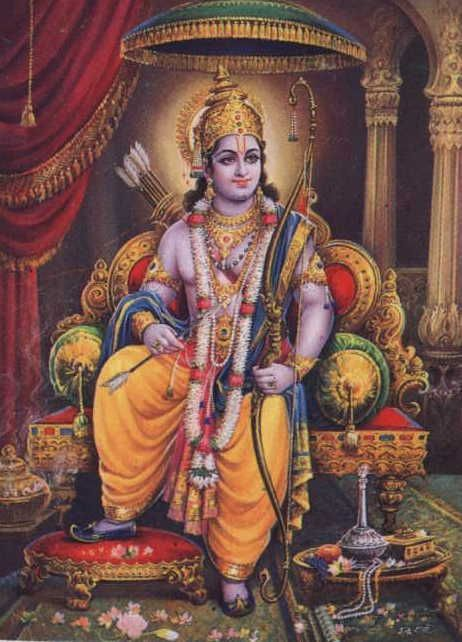
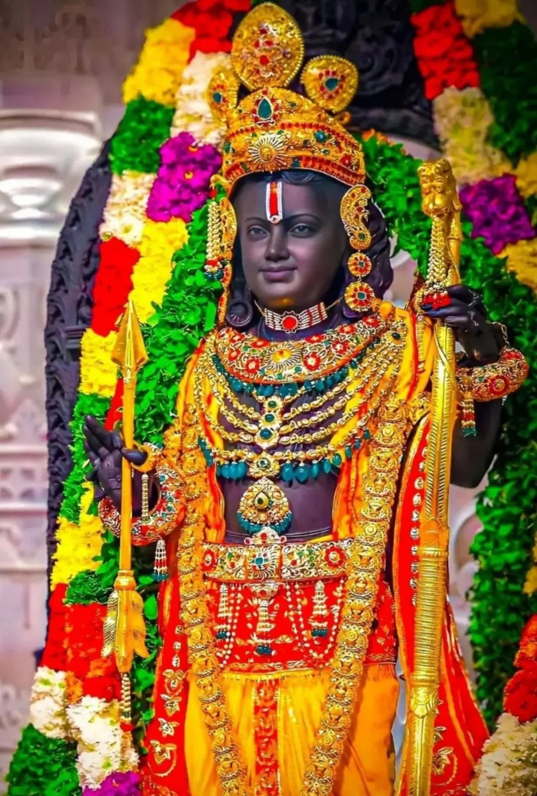

About Ram Mandir
The Ram Mandir in Ayodhya is a Hindu temple dedicated to Lord Ram. It is
believed to be the birthplace of Lord Ram and holds great significance
for millions of Hindus worldwide.
The Ram Mandir (lit. 'Rama Temple') is an under-construction Hindu
temple in Ayodhya, Uttar Pradesh, India. Many Hindus believe that it is
located at the site of Ram Janmabhoomi, the mythical birthplace of Rama,
a principal deity of Hinduism. The site is the former location of
the Babri Masjid mosque, which was built between 1528 and 1529. The
idols of Rama and Sita were placed in the mosque in 1949, before it was
attacked and demolished in 1992. In 2019, the Supreme Court of
India delivered the verdict to give the disputed land to Hindus for
construction of a temple, while Muslims were given land nearby in
Dhannipur to construct a mosque. The court referenced a report from
the Archaeological Survey of India (ASI) as evidence suggesting the
presence of a structure beneath the demolished Babri Masjid, that was
found to be non-Islamic. On 5 August 2020, the bhumi pujan
(transl. ground breaking ceremony) for the commencement of the
construction of Ram Mandir was performed by Narendra Modi, Prime
Minister of India.The temple complex, currently under construction,
is being supervised by the Shri Ram Janmabhoomi Teerth Kshetra Trust. On
22 January 2024, Modi served as the Mukhya Yajman (transl. chief patron)
of rituals for the event and performed the prana pratishtha
(transl. consecration) of the temple. The prana pratishtha
ceremony was organised by the Shri Ram Janmabhoomi Teerth
Kshetra.The temple has attracted a number of controversies due
to alleged misuse of donation, sidelining of its major activists, and
politicisation of the temple by the Bharatiya Janata Party
Significance of Rama
Rama is a Hindu deity who is considered by Hindus to be a Pūrṇāvatāra
(lit. 'The complete avatar of Vishnu') of Vishnu. and some Hindus
view Rama as Para Brahman (lit. 'The ultimate Brahman'). Rama holds huge
significance in Hindu culture and religion. In the Rama avatar, Vishnu
is not supposed to exhibit any of his divine potencies and lead life as
a human. Therefore, based on the sixteen qualities of Rama mentioned
by Narada to Valmiki, the author of Ramayana, the Astika Hindus view
Rama as Puruṣottama (lit. 'The ideal man'), Vigrahavān dharmaḥ
(lit. 'Embodiment of Dharma') and Ādi Puruṣa (lit. 'The Purusha
mentioned in Vedas, i.e. the supreme personality of
Godhead'). According to the ancient Indian Itihāsa, Ramayana,
Rama was born in Ayodhya. Thus Ayodhya is among seven most sacred
cities to Hindus. For Astika Hindus, Ayodhya is like what Mecca is to
Muslims and Jerusalem is to the Jews and Christians. Three places in
Ayodhya are considered as prominent puṇya kṣetra (lit. 'virtued
pilgrimage site') by Hindus. They are Janmasthāna (lit. 'The
birthplace'), Svargadvāra (lit. 'The gateway to Heaven') and Yajñasthala
(lit. 'Place where holy sacrifice was performed'). Temples commemorating
these events used to exist in olden days as Janmasthān temple,
Svargadvār temple and Trētā-kā-Thākūr temple respectively. But, they
were destroyed during Islamic rule in the medieval ages and mosques were
built. While Marxist historians like Irfan Habib agree about the
fate of Svargadvar and Treta-ka-Thakur temples, there is some lack of
consensus among scholars whether Janmasthan temple was destroyed or not
during Medieval rule which eventually led to Ayodhya dispute that was
resolved legally. The Trayodaśakṣarī mantra (Sanskrit: त्रयोदशाक्षरी
मंत्र, lit. '13-character mantra') also known as Śrī Rāma Tāraka Mantra
(lit. 'The Rama mantra for Salvation') is Śrī Rāma Jaya Rāma Jaya Jaya
Rāma (Sanskrit: श्री राम जय राम जय जय राम) and many Astika Hindus
believe that chanting it repeatedly lead to salvation. Tāraka
means something that carries or helps a Jīva (lit. 'a living being')
cross the ocean of samsara. Great devotees of Rama such as Valmiki,
Tulsidas, Bhadrachala Ramadasu, Samartha Ramadas, Tyagaraja, Purandara
Dasa, Gondavalekar Maharaj and Mahatma Gandhi popularized this mantra.
History
The site is the former location of the Babri Masjid, which was built in
the 16th century. The idols of Rama and Sita were placed in the mosque
in 1949, before the mosque was attacked and demolished in
1992. In 2019, the Supreme Court of India delivered the
verdict to give the disputed land to Hindus for the construction of a
temple, while Muslims would be given land elsewhere to construct a
mosque. The court referenced a report from the Archaeological Survey
of India (ASI) as evidence suggesting the presence of a structure
beneath the demolished Babri Masjid, that was found to be
non-Islamic. The ASI claims were heavily disputed by critics as
contradictory and unreliable, but after detailed
proceedings, the Supreme Court accepted the ASI report as valid. The
Supreme Court, in its landmark judgement concluded that the underlying
structure beneath the mosque was not an Islamic structure. However, the
court concluded that no evidence was found that a non-Islamic structure
was specifically demolished for the construction of the Babri
Masjid. Another salient aspect in the apex court's judgement is
on the question on the claim of Hindus that disputed structure as the
birthplace of Rama. The court observed that the Hindu claim is
'undisputed' and opined that there is clear evidence that Hindus
believed that site to be Rama's birthplace
 


 






